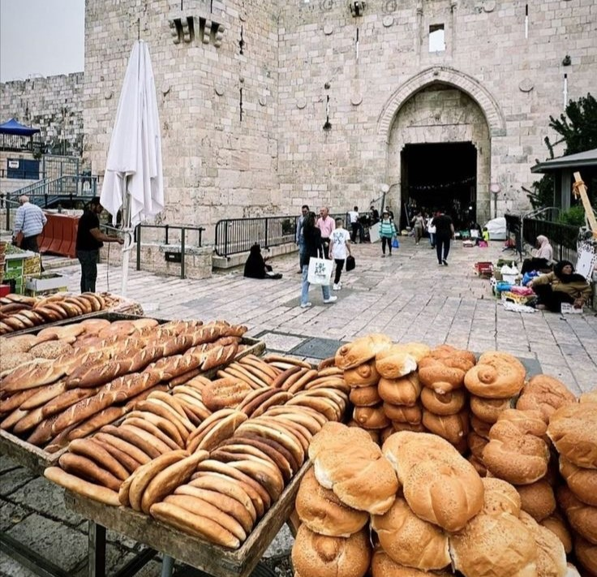

يعتبر التراث الفلسطيني مجموعة غنية من العناصر المادية وغير المادية التي تراكمت عبر العصور، وتعكس تفاعل المجتمع الفلسطيني مع بيئته وتاريخه. وكما ذكر الباحث إبراهيم أبو لغد في كتابه "المسألة الفلسطينية" (1980)، فإن الثقافة الفلسطينية تمثل رابطًا قويًا للأجيال الفلسطينية وتشكل عنصرًا هامًا في الصمود والحفاظ على الهوية.
يعد التراث الفلسطيني جزءًا أساسيًا من الذاكرة الجمعية التي توحد الشعب الفلسطيني وتؤكد على انتمائه لأرضه. هذا التراث يتكون من عناصر مادية وغير مادية تعود لآلاف السنين، وتجمع بين التأثيرات المتنوعة لحضارات وشعوب مرت على فلسطين، لتبقى حتى اليوم شاهدة على هذا التنوع الثقافي. وكما يصف الدكتور هشام شرابي في كتابه "الثقافة العربية: بين الأصالة والحداثة" (1996)، فإن التراث الفلسطيني ليس مجرد فولكلور أو عادات قديمة، بل هو "مجموعة من القيم والرموز التي تضمن بقاء الهوية الفلسطينية وتمنحها القوة".
الأزياء التقليدية الفلسطينية تعكس تنوع وثراء الثقافة الفلسطينية، حيث يحمل كل ثوب بصمة خاصة لمنطقته، وكل تطريزة تروي قصة فريدة. يتميز الثوب الفلسطيني بنقوشه وتطريزاته الزخرفية التي تتنوع من منطقة إلى أخرى، مما يمنح كل قطعة دلالة ثقافية واجتماعية فريدة. فمثلًا، منطقة بيت لحم تتميز بتطريزاتها الدقيقة التي تميل إلى اللون الأحمر، بينما يميل أهل الجليل إلى الألوان الأكثر قتامة وتطريزات أكثر كثافة.
يذكر الباحث ناصر عبد الرحمن في كتابه "الملامح الثقافية للفلكلور الفلسطيني" (2008) أن "التطريز ليس مجرد زخرفة، بل هو لغة بصرية تعبّر عن التراث والأصالة، وتُجسد تاريخًا طويلًا من التقاليد والعادات." وبهذا، نجد أن الثوب الفلسطيني أكثر من مجرد لباس؛ إنه تعبير فني ومعنوي يعكس ارتباط الفلسطينيين بأرضهم وتاريخهم.
تعتبر الدبكة أحد أقدم الفنون الشعبية في التراث الفلسطيني، حيث تمتد جذورها إلى القرون الماضية وتستخدم كوسيلة للتعبير عن الفرح الجماعي. وتترافق هذه الرقصة مع الأغاني الشعبية التي يغنيها الجميع في المناسبات الخاصة والعامة، ما يجعلها رمزًا من رموز الفرح والتضامن. أغاني مثل "يا زريف الطول" و"على دلعونا" تُستخدم للاحتفال بالأعراس والمناسبات السعيدة، وتحمل في كلماتها معانٍ عن الوطن والأرض والحب.
يشير الكاتب سليم تماري في دراسته "مفهوم التراث الشعبي في المجتمع الفلسطيني" إلى أن "الدبكة والأغاني الشعبية ليست مجرد ترفيه، بل هي أدوات فعّالة للحفاظ على الهوية الوطنية". وتظهر الدراسات أن الشعب الفلسطيني يعتبر الدبكة جزءًا من هويته الثقافية والاجتماعية، ويستخدمها لتعزيز الروابط بين الأجيال والحفاظ على التراث في وجدان الشباب.
تعتبر الحِرف اليدوية جزءًا أساسيًا من الثقافة الفلسطينية، وهي تُجسد قدرات الشعب الفلسطيني على الابتكار والتكيف مع الموارد المحلية. تشمل هذه الحرف صناعة الفخار، حياكة السجاد، والتطريز اليدوي الذي يتم استخدامه في الأزياء والمفروشات. صناعة الفخار، مثلًا، تعود إلى عصور ما قبل الميلاد، حيث استُخدمت الأدوات البسيطة والمياه والتربة لصناعة أواني فخارية يُعتقد أنها كانت تستخدم للطهي والتخزين.
تقول الدكتورة رانية حمدان في كتابها "الحرف اليدوية في التراث الفلسطيني"(2005) أن "الحِرف اليدوية ليست مجرد صناعة تقليدية، بل هي فنون تحمل رمزية عميقة تعكس الحياة اليومية للفلسطينيين وتعزز ارتباطهم بالأرض". من خلال هذه الحرف، يتم الحفاظ على التقنيات القديمة ونقلها للأجيال، ويعتبرها الفلسطينيون جزءًا من هويتهم وصمودهم أمام التحديات.
يمثل المطبخ الفلسطيني إرثًا ثقافيًا متنوعًا يعبر عن تنوع المناخ والزراعة الفلسطينية. يعتمد المطبخ بشكل كبير على المنتجات المحلية مثل الزيتون، الحبوب، الخضروات، والفواكه، حيث يعكس كل طبق تقاليد وعادات متوارثة. من أشهر الأطباق الفلسطينية "المسخن" و"المقلوبة" و"المجدرة"، والتي تُحضر بطرق بسيطة ومكونات متاحة على مدار العام. كل طبق يحمل في طياته طابعًا خاصًا من التراث الفلسطيني ويجسد ارتباط الشعب الفلسطيني بأرضه.
الباحثة ليلى زيدان في كتابها "فن الطبخ الفلسطيني" (2010) أن "المأكولات الشعبية تُعد جزءًا لا يتجزأ من التراث، وتظهر الدراسات أن الطعام التقليدي له دور في الحفاظ على الترابط الأسري والهوية الثقافية". الأطعمة الشعبية تُقدم في المناسبات كالأعياد والأعراس، مما يجعلها عنصرًا أساسيًا في الاحتفالات التقليدية، حيث تعتبر رمزًا للفخر والتقاليد.
الفن الفلسطيني هو وسيلة تعبير قوية يستخدمها الشعب الفلسطيني للحفاظ على تاريخه وهويته. من خلال الفن التشكيلي، يقوم الفنانون برسم معاناة وآمال شعبهم. ناجي العلي، على سبيل المثال، يعتبر أحد أبرز الفنانين الفلسطينيين، حيث كانت رسوماته الكاريكاتورية تجسد معاناة الفلسطينيين وتعبر عن تحدياتهم. كما أن الموسيقى الفلسطينية الشعبية، مثل العود والقانون، تُستخدم في التعبير عن القضايا الوطنية.
الباحث يوسف الحمداني في كتابه "الفن الفلسطيني: بين التراث والمقاومة" (2012) إلى أن "الفن ليس مجرد تعبير جمالي، بل هو وسيلة للمقاومة الثقافية والتمسك بالهوية". لقد استخدم الفنانون والموسيقيون الفلسطينيون إبداعاتهم للتعبير عن آرائهم وتقديم رسائل تحمل في طياتها روح التحدي والأمل.
المؤرخ جمال أبو النصر في كتابه "تاريخ العمارة الفلسطينية"(2015) أن "العمارة الفلسطينية هي انعكاس للحضارات المتعاقبة، وتجسد التعايش الديني والثقافي الذي شهدته البلاد". العمارة الفلسطينية تحمل هوية واضحة وتعتبر مصدرًا للفخر الثقافي، حيث يسعى الفلسطينيون إلى الحفاظ على هذه المباني وإبراز قيمتها التاريخية.
تعتبر اللغة العربية عنصرًا أساسيًا في هوية الشعب الفلسطيني، حيث تُستخدم في التعبير عن التراث والفن والأدب. اللهجات الفلسطينية المتنوعة تعكس التنوع الجغرافي، حيث يميز كل منطقة لهجة خاصة بها. تشير الدكتورة هند القيسي في كتابها "اللغة والهوية في فلسطين" (2010) إلى أن "اللغة تحمل هوية الشعب وتُعد انعكاسًا لخصوصيته، كما أن استخدامها في الشعر والأغاني يُعزز من هذه الهوية ويؤكد على الأصالة".
يعد الدكتور إدوارد سعيد من أبرز المفكرين الفلسطينيين، وقد اهتم بالهوية والتراث الفلسطيني في العديد من أعماله. في كتابه "الثقافة والإمبريالية" (1993)، يصف سعيد التراث الفلسطيني على أنه "أكثر من مجرد ماضي يمر؛ إنه جزء من المستقبل أيضًا"، ويشير إلى أن التراث الفلسطيني يشكل جزءًا من الهوية التي لا يمكن الاستغناء عنها أو نسيانها. كما يؤكد أن الشعب الفلسطيني يمتلك ثقافة غنية وقدرة على التكيف والصمود عبر التاريخ، وأن هذه الثقافة هي ما يمنحهم القوة في مواجهة الاحتلال.
الكاتب والروائي غسان كنفاني هو أحد الأيقونات الأدبية الفلسطينية، وقد تحدث عن التراث الفلسطيني في رواياته ومقالاته. في كتابه "أرض البرتقال الحزين"، كتب كنفاني عن ارتباط الشعب الفلسطيني بأرضه وتاريخه، حيث قال: "إننا لم نحمل فلسطين في الذاكرة فقط، بل في عروقنا أيضًا". يظهر كنفاني في رواياته أهمية التراث والعادات والتقاليد في تعزيز الهوية الفلسطينية وصمود الشعب في مواجهة التهجير.
الرسام الكاريكاتيري الفلسطيني ناجي العلي، المعروف بشخصية "حنظلة"، قدم أعمالًا فنية تحاكي التراث الفلسطيني وتعبر عن روح المقاومة. يقول العلي عن عمله: "حنظلة ليس شخصية كاريكاتورية فقط، بل هو جزء من التراث الفلسطيني الذي يقف صامدًا أمام كل التحديات". كانت أعمال العلي وسيلة فنية لإيصال رسالة الشعب الفلسطيني وتراثه، مما جعله أحد رموز الهوية الثقافية.
يعتبر سليم تماري من أبرز الباحثين في علم الاجتماع الفلسطيني، وقد كتب العديد من الدراسات التي تناولت التراث الشعبي وأهميته في المجتمع الفلسطيني. في كتابه "السير الشعبية الفلسطينية"، يشير تماري إلى أن "الفولكلور الفلسطيني هو تاريخ شعب، هو تراث يحمل روح الجماعة ويعبر عن القيم والأفكار التي تتوارث عبر الأجيال." ويؤكد أن الأغاني الشعبية، الدبكة، الحكايات والأساطير كلها مكونات تعبر عن التراث الفلسطيني وتعزز هوية الشعب.
الكاتب والمؤرخ الفلسطيني ناصر الدين النشاشيبي كتب عن التراث الفلسطيني في العديد من مؤلفاته، ومنها كتاب "قصة بلد"، حيث يصف النشاشيبي التراث الفلسطيني على أنه "هوية، وليس مجرد عادات وتقاليد". ويؤكد على أن التراث الفلسطيني يعكس تجارب وأفكار ومعتقدات شكلت الشخصية الفلسطينية، ويعتبره جزءًا لا يتجزأ من النضال الفلسطيني. الكاتب والمؤرخ الفلسطيني ناصر الدين النشاشيبي كتب عن التراث الفلسطيني في العديد من مؤلفاته، ومنها كتاب "قصة بلد"، حيث يصف النشاشيبي التراث الفلسطيني على أنه "هوية، وليس مجرد عادات وتقاليد". ويؤكد على أن التراث الفلسطيني يعكس تجارب وأفكار ومعتقدات شكلت الشخصية الفلسطينية، ويعتبره جزءًا لا يتجزأ من النضال الفلسطيني.
يعد الدكتور هشام شرابي من أهم المفكرين العرب الذين ناقشوا قضايا الثقافة والتراث في العالم العربي، بما في ذلك التراث الفلسطيني. في كتابه "الثقافة العربية: بين الأصالة والحداثة"، يصف التراث الفلسطيني بأنه "درع يحمي الهوية الفلسطينية من الضياع"، ويؤكد أن الفلكلور الفلسطيني من أغانٍ ورقصات وأمثال هو تجسيد لترابط المجتمع الفلسطيني مع ماضيه، وتأكيد على استمرارية الهوية الفلسطينية عبر الزمن.